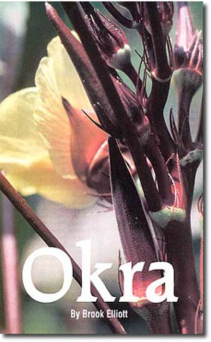
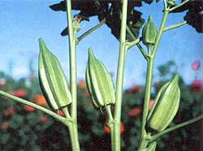
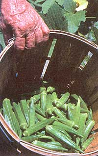
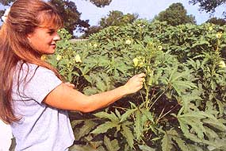

Wow!" a recent visitor exclaimed. "Those are pretty enough to grow in a flower garden." She was right. With its elegant hibiscus-like flowers and spiky pods, okra is as showy as any edible plant can be. The tall plants look great in the garden, and the dried seed pods are often used in floral arrangements. The young pods are the part you eat; they have a tender, chewy texture and earthy green taste.
Call it gumbo, bamya, lady's fingers, bhindi, quingombo or a half-dozen other names, okra is an annual vegetable usually thought of as a Southern plant. Reflecting its host of common names, okra even has two scientific names: Abelmoschus esculentus and Hibiscus esculentus.
A basic ingredient in the Cajun dish filé gumbo, okra is actually much more versatile. It can be breaded and fried, steamed, baked, grilled, stir-fried, pickled, or used in numerous soups and stews.
Originating in Africa, okra is thought to have been brought to America by slaves, along with that other Southern staple, cowpeas (aka black-eyed peas). In colonial days it was more universally popular than now and was being sold in Philadelphia markets as early as 1781. In his classic 1863 book, Field and Garden Vegetables of America, Fearing Burr lists four varieties, which indicates okra was a widespread market crop by the middle of the 19th century. As recently as 1998, there were 43 varieties being offered by commercial seed houses, according to the Seed Savers Exchange's Garden Seed Inventory.
Depending on variety, okra grows from 2 feet to as much as 10 feet tall, and usually produces green pods and yellow flowers with purple centers. But there are many variations on this theme, including plants whose stems, foliage and pods range from burgundy to scarlet. My favorite is an heirloom variety called 'Betty's White,' which produces ivory flowers with claret centers and white to very pale-green pods.
As the plant matures, a single flower forms in the crotch between branches and the stems of leaves. These flowers last only one day and are immediately followed by pods. Unharvested, the pods can grow as long as 10 inches. Okra prefers hot weather, but it's a misconception that it requires a very long growing season. Some varieties will begin forming pods just 50 to 60 days after planting. If your hot summer season is short, be sure to use one of these early-yielding varieties, such as 'Annie Oakley,' 'Dwarf Green Long Pod,' 'Blondie,' 'Burgundy' or 'Clemson Spineless.' Once the plants start setting pods, they will continue doing so until frost.
Okra will grow in any well-drained garden soil in full sun. The soil should be worked 8 to 10 inches deep to promote strong root growth, and compost or organic fertilizer should be worked in. Most okra growers sow seeds directly in the garden. Plant the seeds an inch deep and 2 inches apart, in rows 3 feet apart, a few weeks after all danger of frost has passed. Once sprouted, the plants should be thinned to about 15 inches. Alternatively, plant three to five seeds in hills 15 inches apart. When the plants are 3 or 4 inches tall, thin the hills to the single strongest plant in each hill.
Contrary to conventional wisdom, okra can be started indoors. I start it in flats, then repot the young shoots into newspaper pots. These in turn are transplanted after all frost danger has passed, being careful to not disturb the roots. Growers in short-season climes might consider this technique to assure a crop.
Okra should be cultivated to keep weeds down. Hand pull any weeds very close to the stems to avoid damaging roots. The plants produce strong stems, and staking is usually not needed. Okra is fairly drought tolerant, and watering every seven to 10 days is more than adequate.
Okra pods should be picked when they are 2 to 3 inches long. (Larger pods will be tough and fibrous.) Often this means harvesting every two days to assure tender pods. Some okra varieties have short, hairy bristles that can cause itchiness and a possible rash, so wear gloves when harvesting the pods. (These hairs lose their prickliness when cooked.) Pods keep well in the fridge for up to three days. After that they start to discolor and deteriorate rapidly.
Three to four plants produce more than enough okra for the average family. Excess pods can be frozen, or you can make okra pickles. (See "Hot Pickled Okra," at left) To freeze, just blanch the whole pods in boiling water for three to four minutes. then immediately cool them in an ice water hath. Freeze them in plastic bags, squeezing out as much air as possible before sealing.
To save seed from okra, let a few pods on each plant go unharvested. They'll grow large, then start to dry. If possible let them dry fully on the plants. If not, once the drying has started, take them indoors and let them dry thoroughly. Even fully mature green pods can be dried indoors. The seeds shell easily from the dried pods.
Although okra flowers are perfect and self-pollinating, the showy blooms are very attractive to bees, and different varieties readily cross-pollinate. To guarantee seed purity, varieties should be separated by at least one mile, or other isolation techniques-such as bagging individual flowers-should be used. When stored under ideal conditions, okra seed will remain viable for about five years.
Okra Seed Sources: Park Seed, (800) 845-3369, www.park.seed.com ; Southern Exposure Seed Exchange, (540) 8949480, www.southernexposure.com .
|
 Burgundy' okra has attractive red stems and pods and grows to 4 feet tall. |
 Star of David' okra has a distinctive, strong flavor and can grow 10 feet tall. |
 Left: 'Lee Dwarf' is a high-yielding variety developed by the University of Arkansas. |
|
 |
|
|